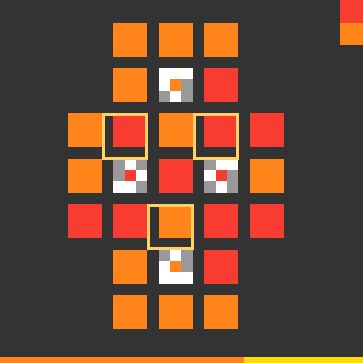
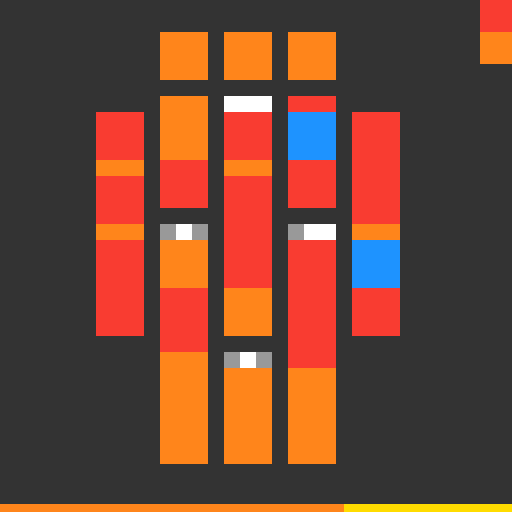

EXP-DUCK-030 tests the same hypothesis-first architecture on a different
family: a mouse-controlled color puzzle. The learner stores no winning
coordinates and no named color roles.
Cross-family gate: PASS21/21 actions matchedAdvanced to level 5Held-out winning actions used for inference: 0Competition submission: NO
The logic, in five steps
1. Find structure
Detect repeated blocks and their spacing.
2. Find clues
Separate 18 plain cells from 3 patterned clue cells.
3. State a rule
One mask mark copies the clue center; the other chooses a different state.
4. Test globally
Shared cells must receive the same answer from every clue.
5. Act and check
Click the first wrong cell, observe it, and continue toward the frozen target.

Only this initial board was used. Yellow boxes identify the three detected clues.

The target was fixed before any successful level-4 click was read.
Falsifiable hypothesis test
Center-copy hypothesis
Consistent targets
Decision
Pixel mark 0
1
Accepted
Pixel mark 2
0
Rejected
Why overlap matters
Reading each clue alone leaves 8 possible assignments.
Demanding that overlapping clues agree leaves exactly 1.
Reversing the two mask meanings leaves 0.
This is logic, not blind trial and error: the
wrong explanation is rejected before clicking.
Closed-loop action audit
The objective stays fixed. After every click, the policy reads the new board
and asks: “What is the first cell that still differs from the target?”
Select an action to see the observed state change.
Decision and next gate
The architecture now works on two unlike families:
tu93 uses a learned navigation graph; ft09 uses a learned constraint model.
That supports the scalable principle observe -> hypothesize -> reject
inconsistent models -> plan -> verify each effect. The next honest test
is prospective: apply it to an unsolved level whose successful actions are not
already in our replay, and reject it if the objective is ambiguous or an
observed action contradicts the model.